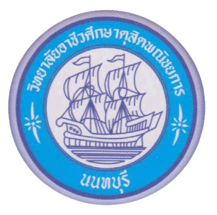

วิทยาลัยอาชีวศึกษาดุสิตพณิชยการ นนทบุรี
จะประกาศผลการเรียนภาคเรียนที่ 1 ปีการศึกษา 2566
ภายใน
00 วัน 00 ชั่วโมง 00 นาที 00 วินาที
ผ่านระบบ MIS-School
ทั้งช่องทางไลน์ MIS-Connect
เว็ปไซต์ (https://misschool.net/sys) และ แอปพลิเคชั่น mStudent-MIS
้
เมนูต่าง ๆ
เพิ่มเพื่อน MIS-Connect ในไลน์
คู่มือการใช้งาน Mis-Connect
เว็บไซต์เข้าดูผลการเรียน
คู่มือการใช้งานเว็บไซต์ MIS-School
ดาวน์โหลดแอปพลิเคชั่น mStudent-MIS
คู่มือการใช้งานแอปพลิเคชั่น mStudent-MIS